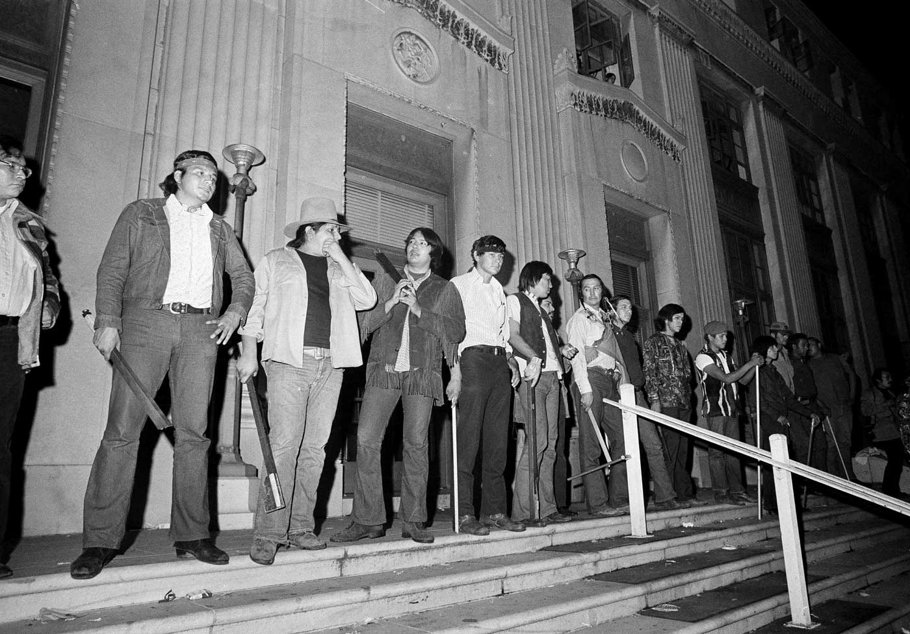
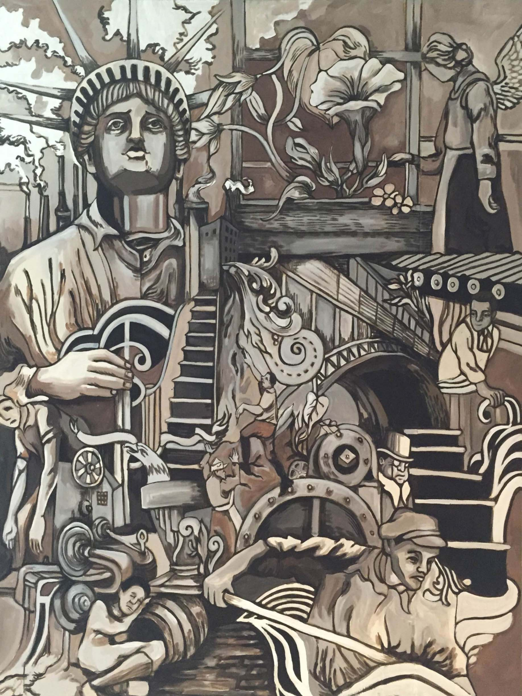
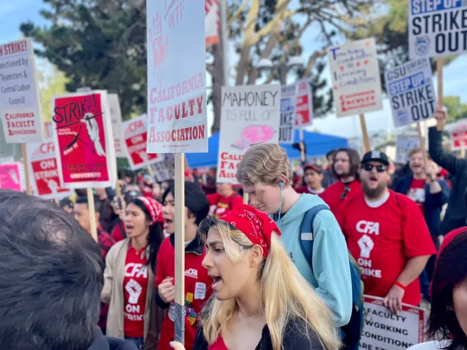

In 1968, students at San Francisco State College opened their history books and noticed who was missing. Farmworkers, railroad workers, Indigenous peoples, and enslaved people had all helped build California and the United States. But many of their stories were barely there. The students called this erasureWhen the history, culture, or experiences of a group of people are deliberately left out or ignored., and they decided to fight it.
In 1968, students at San Francisco State College looked at their history books. They saw many people were missing. Workers, Native people, and enslaved people helped build the country. But their stories were barely there. The students called this erasureLeaving people or their stories out.. They decided to fight it.
THE TEXTBOOK PROBLEM

History books do not tell every story. People choose what goes in and what stays out. Those choices shape how students understand the past.
History books cannot tell every story. People choose what goes in. People choose what stays out. Those choices matter.
For a long time, a small group of people made most of those choices. They were often white men from the eastern United States. Because of that, many communities were pushed to the side.
For a long time, a small group made most history books. They were often white men. Many other communities were left out.
Chinese railroad workers were often missing from railroad chapters. Black soldiers were often given only a sentence. Native nations were often shown as problems, not as governments with their own laws and leaders.
Chinese railroad workers were often missing. Black soldiers got little space. Native nations were often shown as problems. They were not shown as governments with laws and leaders.
This was not always a mistake. Schools and publishers chose the version of America students would read. The narrativeThe story that gets told about a group of people or event, especially when someone has power to shape that story. shaped how people saw the country.
This was not always an accident. Schools chose the story students would read. That narrativeThe story people choose to tell about an event or group. shaped how people saw America.
When students never see their communities in class, they get a message. The message says their history does not matter. That hurts how students see themselves, and it gives everyone an incomplete story.
When students never see their community in class, it sends a message. It says their history does not matter. That hurts students. It also gives everyone an incomplete story.
"One ever feels his twoness: an American, a Negro; two souls, two thoughts, two unreconciled strivings."
W.E.B. Du Bois, The Souls of Black Folk, 1903.
Du Bois wrote about what it felt like to live in a country that did not fully include Black Americans in its own story.
Question 1: What two sides might Du Bois be talking about?
Question 2: What happens when a community is left out of the story?
The San Francisco State strike lasted 134 days. That is longer than an entire modern high school semester.
THE STRIKE THAT CHANGED SCHOOLS

In November 1968, students at San Francisco State College stopped going to class. They were not protesting lunch or tuition. They wanted classes that taught the histories and cultures of communities of color.
In November 1968, students stopped going to class. They were not upset about lunch or tuition. They wanted classes about communities of color.
The students formed the Third World Liberation Front. Around the world, people were fighting colonial rule. These students saw their school as part of a bigger problem: some communities were treated as less important.
The students formed a group. It was called the Third World Liberation Front. They saw a bigger problem. Some communities were treated as less important.
The strike lasted 134 days. Police came to campus many times. Students were arrested. The college president resigned. Still, the students kept going.
The strike lasted 134 days. Police came many times. Students were arrested. The college president quit. The students kept going.

The students had fifteen demands. Their biggest demand was clear: create Ethnic StudiesThe study of histories, cultures, and experiences of communities often left out of mainstream education.. They wanted courses that told a fuller American story.
The students had fifteen demands. Their biggest demand was Ethnic StudiesA class that studies communities often left out of regular history classes.. They wanted classes that told more of the American story.
In 1969, the college agreed. San Francisco State created the first College of Ethnic Studies in the country. The students changed one school, but they also changed what American education could look like.
In 1969, the college agreed. It created the first College of Ethnic Studies. The students changed one school. They also changed education.
"We are a coalition of Third World students united to end racism in our educational system."
Third World Liberation Front, Strike Demands Statement, San Francisco State College, November 1968.
These students argued that a school system that erases some communities is not educating everyone equally.
Question 1: Why did students call this racism?
Question 2: How does representationWhether a group of people is accurately included in schools, media, textbooks, or public life. connect to the essential question?
HOW CALIFORNIA FINALLY ACTED

The San Francisco State students won something important in 1969. But that change only reached one university. It took about fifty more years to bring ethnic studies into California high schools.
The students won in 1969. But the change only reached one college. It took about fifty more years to reach California high schools.
In 2021, California made ethnic studies a graduation requirement. It was the first state to do this. The rule fully begins with the class of 2030.
In 2021, California made ethnic studies a graduation rule. It was the first state to do this. The rule starts fully with the class of 2030.
Why did it take so long? People argued about what American history should include. Some said ethnic studies would divide students. Others said leaving people out had already done that.
Why did it take so long? People argued about history class. Some said ethnic studies would divide students. Others said leaving people out already divided students.
SAN DIEGO CONNECTION: THE FIGHT CAME HERE TOO
San Diego schools began trying ethnic studies before the state law passed. Students, families, and community members wanted lessons that included the Kumeyaay Nation, Mexican American families, Filipino communities, and Black communities in the city.
The Kumeyaay Cultural Repatriation Committee has worked for decades to recover cultural items taken from their community and held in university collections.
You are designing one history class. You only have one full week left. What gets the week: presidents, wars, immigration, labor movements, civil rights, or local community history?
FIVE STORIES YOU WERE NEVER TOLD
This course will include stories that many history classes skip. You do not need to know the full story yet. Start with one question: did you already know this happened?
This course includes stories many classes skip. You do not need to know everything yet. Ask this: Did I already know this happened?
A counternarrativeA story that challenges the official version of history by including voices and events that were left out. pushes back against the usual version of history. It adds people and events that were left out. The stories below are real, but many textbooks ignored them for years.
A counternarrativeA story that adds people or events that were left out. pushes back against the usual story. It adds people who were left out. The stories below are real. Many books ignored them.


THE TULSA RACE MASSACRE (1921)
A white mob burned down Greenwood, a successful Black neighborhood in Tulsa, Oklahoma. Many people were killed or hurt. Thousands lost their homes.
THE ZOOT SUIT RIOTS (1943)
In Los Angeles, U.S. servicemen attacked young Mexican American and Black men wearing zoot suits. Police often arrested the victims instead of the attackers.
THE CHINESE EXCLUSION ACT (1882)
Congress banned Chinese laborers from entering the country. Many Chinese workers had helped build the railroad. Then the country shut them out.
THE BRACERO PROGRAM (1942-1964)
Millions of Mexican workers came to the U.S. to work on farms. Many were promised fair pay. Many were cheated.
THE TRAIL OF BROKEN TREATIES (1972)
Native American activists traveled to Washington, D.C. They demanded that the U.S. honor treaties. Most Americans still do not know it happened.


These five stories are not random. They show a pattern. Leaving them out does not make them less real. It only means students grow up without knowing them.
These stories are not random. They show a pattern. Leaving them out does not make them less real. It just means students do not learn them.

What part of this mural feels like it is trying hardest not to be forgotten?
HOW THIS STILL MATTERS TODAY
THE FIGHT OVER WHOSE STORIES BELONG IN SCHOOL NEVER ACTUALLY ENDED.

Students put their bodies on the line to demand courses that included their communities.

Students and families still argue over what schools should teach.
Which group do you think would understand the other group immediately?
If nobody tells a story for fifty years, who is responsible for telling it now?